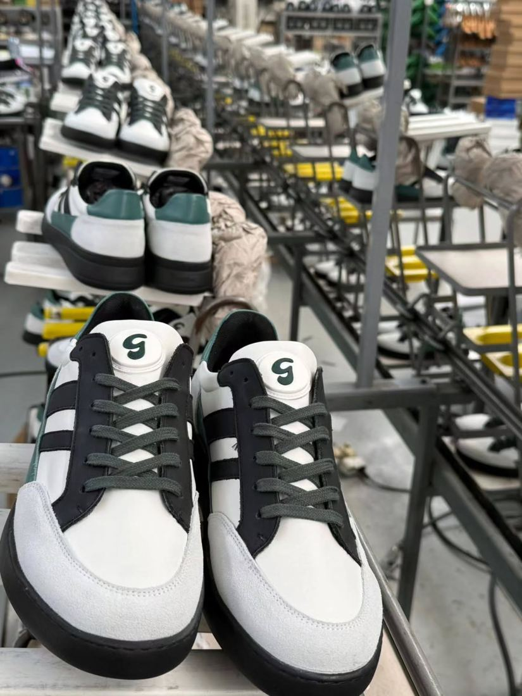

Um mercado imenso
Milhares de marcas no mundo podiam produzir em Portugal, e algumas já produzem. Para as encontrar, é preciso chegar a muitas e ir filtrando.
Temos que lançar uma rede de pesca grande para depois ir peneirando.
Prospeção com inteligência artificial, por módulos. Começa pelo email: marcas de calçado lá fora, cada uma com uma mensagem escrita para ela. As horas do Pedro e da designer ficam para quem já quer avançar.

8 minutos de leitura.
1 O que ouvimos
Milhares de marcas no mundo podiam produzir em Portugal, e algumas já produzem. Para as encontrar, é preciso chegar a muitas e ir filtrando.
Temos que lançar uma rede de pesca grande para depois ir peneirando.
O ChatGPT envia 20 leads por dia às 9 da manhã. Depois, cada perfil é investigado e cada mensagem é escrita uma a uma, antes de ser enviada.
Pegamos no perfil da pessoa, vamos ao ChatGPT para ele construir a mensagem, só que é tudo manual.
O Sales Navigator ajuda a encontrar as pessoas, mas o envio é manual e limitado. Funciona, só que não chega para milhares de marcas.
Ele só deixa mandar 50 por mês.
Com o Instagram a crescer, os pedidos de informação vão aumentar. O primeiro contacto pode ser de um agente, e só quem avança passa a uma pessoa.
Ser um agente a responder, e depois só quando avança para uma segunda pergunta é que passava para o humano.
Na Portdance são 12, mas na PortCraft estão o Pedro e a designer de calçado. O tempo dos dois tem de ir para o design e para as marcas que fecham.
Nós somos duas pessoas adstritas ao projeto, sou eu e a designer de calçado.
Sem CRM caro para já: as leads ficam no Excel. E o investimento acompanha o que o projeto for dando. É assim que esta proposta está desenhada.
Também sou a favor de escalar o investimento consoante a evolução do projeto.
Os primeiros 20 dias da PortCraft
Os números que o Pedro nos deu a 21 de outubro. As barras não estão à escala: mostram a ordem, não a proporção.
A procura existe e já está a responder. Falta ir buscá-la lá fora sem ser à mão.
Citações da reunião de 21 de outubro de 2026, com pequenos acertos de oralidade.
2 Como funciona
O Apollo e o Sales Navigator continuam a encontrar as pessoas. A diferença está no que vem a seguir: cada marca é investigada, recebe uma mensagem escrita para ela, e as respostas chegam já separadas. O Pedro só entra quando há uma reunião para fazer.
É o primeiro trabalho do módulo 1, e o que mais pesa no resultado. Partimos das marcas que já vos procuraram e das três que estão em fase de fecho: o que têm em comum diz-nos onde procurar as próximas.
Depois, a mesma lógica que estamos a preparar para um cliente que vai vender a nível global: uma base por país, a começar pelos mercados prioritários, e a abrir os seguintes com os números na mão.
Exemplo de partida. As perguntas e as respostas definem-se convosco na primeira semana.
3 O agente a trabalhar
As marcas estão lá fora. O agente escreve e responde em inglês, espanhol ou francês, com o tom de quem conhece o produto.
Pergunta o que falta saber, uma coisa de cada vez: que calçado, quantos pares, para quando. Quem não encaixa tem resposta, sem ocupar ninguém.
Propõe duas horas, marca a reunião e envia o convite. O Pedro recebe o resumo antes de entrar na chamada.
Simulação de quatro conversas. Na primeira, uma marca de sneakers de Amesterdão responde ao segundo email da sequência: já produz em Portugal mas não está contente com os prazos; o agente pergunta os pares por cor e o prazo das amostras, e marca a reunião com o Pedro para quinta às 15:00. Na segunda, uma escola de dança de Valência comenta o post das GROOVIES; o agente responde em privado, percebe que é uma escola e não uma marca, e passa ao Pedro. Na terceira, uma marca de Londres pede preço e entrega em dezembro para 500 pares; o agente não dá preço nem prazo e passa ao Pedro e à designer com a ficha técnica. Na quarta, uma marca francesa responde que este ano não; o agente pára a sequência e combina o recontacto para setembro.
Simulação do que vamos construir. Marcas, nomes, horas e conversas inventados. O agente nunca dá preços, prazos nem quantidades mínimas: isso é sempre do Pedro.
Quando uma conversa acaba numa reunião, ou precisa de uma pessoa, o Pedro recebe uma mensagem com o que a marca quer, o que a preocupa e o que convém saber antes da chamada. Ninguém tem de ler a conversa toda. É o resumo da primeira conversa.
Reunião marcada: Noordvelt, quinta às 15:00. Sneakers, cerca de 300 pares por cor.
Não está contente com os prazos da fábrica atual.
Ter as amostras em fevereiro, para a próxima coleção.
Respondeu no próprio dia e aceitou a primeira hora proposta. Produzir em Portugal já não é novidade para ela.
Já tem fornecedor: vai comparar prazos. Convém levar exemplos de calendário de amostras.
4 Os módulos
Como propus na reunião: primeiro a prospeção por email, que é onde se chega a mais marcas com menos risco. Os outros módulos entram quando fizerem falta, cada um com a decisão do Pedro.
1 Meses 1 e 2
O canal que escala: milhares de marcas por mês, sem pôr em risco o email oficial da PortCraft.
2 Meses 3 e 4
O primeiro contacto deixa de ser do Pedro. O agente responde e só passa quem avança.
3 Meses 4 a 6
O Instagram e o LinkedIn, sem escrever cada mensagem à mão, e ao ritmo que as plataformas aceitam.
4 Quando o Excel não chegar
Um CRM simples, feito para a PortCraft, quando o volume o justificar. Para já, o Excel serve.
5 A ligação ao que já têm
Não há programa novo para aprender. As marcas vêm das ferramentas que já pagam, as respostas chegam às caixas certas, e cada passo fica registado no Excel de leads que já usam.
Nada sai do endereço da PortCraft. Os envios em volume saem de domínios e caixas próprios, aquecidos antes de começar, para que um problema de entrega nunca chegue ao email com que falam com os clientes.
O LinkedIn não aceita automação em massa. As mensagens saem da conta do Pedro, espaçadas ao longo do dia, como uma pessoa enviaria. É o canal mais lento, e por isso fica no módulo 3.
6 Limites
Do outro lado estão marcas que vão confiar a vossa fábrica ao nome delas. Preferimos dizer já o que o agente não faz do que prometer o que não se cumpre.
Preços, prazos de entrega, quantidades mínimas, materiais: nada disso sai do agente. Fala do que a PortCraft faz, com o que nos derem.
Prepara o terreno e marca a reunião. O desenvolvimento, as amostras e as condições são sempre do Pedro.
Sempre que a marca pede, ou o assunto o pede. Com o resumo, para ninguém ter de repetir a história.
7 Investimento
Em 20 dias, 45 pedidos deram 8 reuniões e 3 marcas em fase de fecho. Cada marca que fecha paga o desenvolvimento e, se avançar para produção, deixa margem em cada encomenda. O módulo 1 existe para multiplicar as reuniões, sem multiplicar as horas do Pedro e da designer.
Nós não queremos avançar logo a todo o vapor, mas queremos começar a construir.
Pedro Sousa, na reunião de 21 de outubro.
Valores sem IVA em destaque, com IVA entre parênteses.
8 Prazo
Definimos convosco o perfil de marca e os primeiros mercados. Montamos a base, criamos os domínios e as caixas, que começam a aquecer, e aprovam os textos das primeiras sequências.
As sequências começam a sair, em volume a subir de forma gradual. As primeiras respostas e reuniões chegam ao Pedro, e afinamos o que for preciso.
Se decidirem avançar, o agente passa a responder aos pedidos de informação, e depois juntam-se o Instagram e o LinkedIn.
Novos mercados com os números na mão, e o painel comercial se o Excel deixar de chegar.
Os prazos contam a partir da assinatura e dependem da rapidez das respostas de parte a parte. As caixas novas precisam de algumas semanas de aquecimento antes de enviarem em volume: é por isso que os envios começam no segundo mês.
9 Próximos passos
Três passos até à primeira semana de trabalho. Nada arranca sem confirmar por escrito.
Por WhatsApp ou por email: com que módulos arrancamos. Respondemos a todas as dúvidas que ainda tenha.
O âmbito, os valores e as condições desta página, e o acordo de confidencialidade. Assina e arrancamos.
Uma sessão consigo e com a designer para o perfil de marca, e o acesso ao Apollo e ao Excel de leads.
Manuel Condeço, AI Solutions
964 251 889 ou manuel.condeco@aisolutions.pt